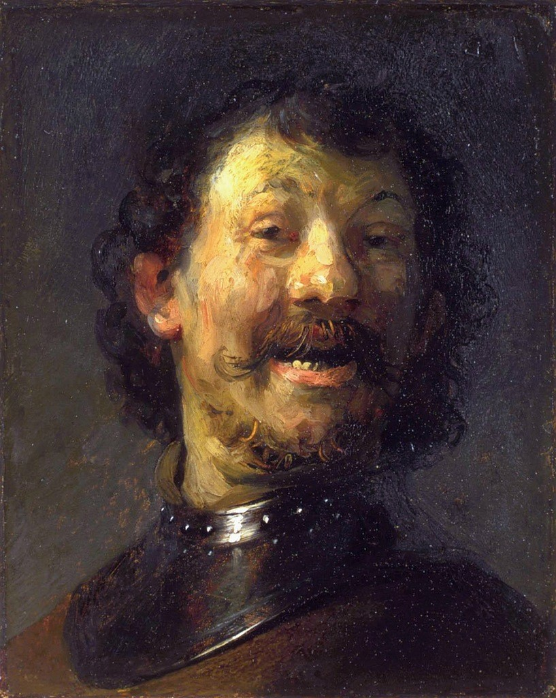

<!DOCTYPE html><html lang="en"></html><head><meta charset="UTF-8"/><title>Malar theme</title><link rel="stylesheet" type="text/css" href="index.css"/><link rel="stylesheet" type="text/css" href="//cdnjs.cloudflare.com/ajax/libs/font-awesome/4.3.0/css/font-awesome.min.css"/><link href='http://fonts.googleapis.com/css?family=Open+Sans:300,800,400,600&subset=cyrillic,latin' rel='stylesheet' type='text/css'></head><body><nav><div class="_container"><div class="navhead"><div class="logo"><a href="/">Malar!</a></div><div class="responsive_toggle_button"><button><i class="fa fa-bars"></i></button></div></div><div class="navbar"><ul><li class="active"><a href="#">Уроки</a></li><li><a href="#">Блог</a></li><li><a href="#">О проекте</a></li></ul></div></div></nav><section class="paper"><div class="paper_header"><h1>Рембрандт писал дико. Мучил и растирал краску, не стараясь</h1><ul class="tags"><li><a href="#">Секс с животными</a></li><li><a href="#">Анальный петтинг</a></li><li><a href="#">Лесбиянки</a></li><li><a href="#">На лицо</a></li><li><a href="#">Двойное проникновение</a></li><li><a href="#">Межрассовый секс</a></li></ul><p class="date">Вчера 23:40</p></div><div class="paper_body"><p>Рембрандт отличился скандальной манерой своей живописи. С течением его творческого развития, «на смену размеренным, тщательно прорисованным линиям приходят резкие и дикие мазки», — как писал Эмиль Верхарн. Но тяготел к таким «диким» мазкам художник и на ранних этапах своего творчества («Голова смеющегося солдата» (1629)), можно сказать, что ранние этюды 1620-х годов вполне сравнимы с работами 1660-х. В Голландии в этот момент было модно писать светлыми красками, ровными легкими и прозрачными мазками, что стало причиной невостребованности живописца с его фактурной живописью.</p><blockquote> <p>Рембрандт отличился скандальной манерой своей живописи. С течением его творческого развития, «на смену размеренным, тщательно прорисованным линиям приходят резкие и дикие мазки», — как писал Эмиль Верхарн.</p><p class="blockquote_author">Эмиль Верхарн, 1960</p></blockquote><p>«Манеру Рембрандта» описывали так: Манера письма, «где исчезает контур, где фигуры создаются не внутренними или внешними линиями, но исключительно вихревыми движениями кисти, повторяющимися с большой силой <…>. Едва холст высыхал, он начинал работу заново, вновь нанося большие и малые мазки, так что толщина краски в иных местах достигала более чем полу-пальца» (Филиппе Бальдинуччи, 1686).</p><p> <strong>Что существенно затормозит прогресс:</strong><ul><li>Упражняться в набросках ежедневно. Наблюдать окружающее внимательнее, искать новые сюжеты.</li><li>Страдать от того, что не выходит нарисовать «прямую линию» — от этого рисунок только выразительней, поверьте.</li><li>Сравнивать себя с теми, кто опытнее вас</li><li>Прыгать выше головы: рисовать сложные вещи, пока не освоили простые.</li><li>Длительные 
<a href='#'>перерывы в рисовании</a>
(больше недели).</li></ul></p></div></section><div class="social-side"><ul><li><a href="#"><i class="fa fa-vk"></i></a></li><li><a href="#"><i class="fa fa-instagram"></i></a></li><li><a href="#"><i class="fa fa-twitter"></i></a></li><li><a href="#"><i class="fa fa-tumblr"></i></a></li></ul><ul class="helper-side"><li class="search"><a href="#"><i class="fa fa-search"></i></a></li><li class="to-top"><a href="#"><i class="fa fa-arrow-up"></i></a></li></ul></div><footer><ul class="footer-social-buttons"><li><a href="#"><i class="fa fa-vk"></i></a></li><li><a href="#"><i class="fa fa-instagram"></i></a></li><li><a href="#"><i class="fa fa-tumblr"></i></a></li><li><a href="#"><i class="fa fa-twitter"></i></a></li></ul><p class="social-p">MALAR в социальных сетях</p></footer><script type="application/javascript" src="main.js"></script></body>